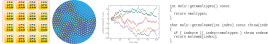

Scientific Computing - SciComp9505B¶
Important
The formalities, schedule, assignments etc. are available at OWL
This site is updated continuously. New material is being added as we progress and typos (sigh!) will be corrected.
When reading the files, please notice that there
tabsanddropdownsthat have more information and/or, code snippets or/and operating system specific installation instructions.These pages also support hypothes.is annotations (the little arrow at the top right hand corner). Using hypothes.is allows you annote the text, make notes etc. The annotations and notes can be private, public or visible to a group (the course in this case; let me know if you want to join the group). This is entirely optional so try it out and see if you like it. The service requires registration but it is free.
Target audience¶
Graduate students
Course material¶
Will be distributed through this web site and OWL.
During the first two weeks we familiarize ourselves with some basic basic background and terminology, and install the necessary software.
Learning outcomes¶
After successful completion of this course, the student should have the skills and knowledge to
Understand the foundations of the main methods and approaches in scientific computing
Possess hands-on practical skills of data analysis, visualization and error tracing.
Understand the basics aspects of high-performance computing
Be able to assess, interpret and understand the correctness of code
Understand the practical and theoretical challenges related to scientific computing
Perform hands-on data analysis and use different visualization methods
Be able to assess reliability and errors in simulations
Have an understanding of the current developments in the field, in particular machine learning.
One the main aims is that the students will gain a good overview of different methods and approaches in computational modeling, and the ability choose a proper method for the problem at hand.
As practical outcome, the students will learn the need for different operating systems and command interfaces, and how to do practical operations using the command line interface, installation of software, compilation of source codes and how to resolve problems when they arise.
Hands-on approach¶
This course uses a hands-on approach: You will write scripts and short programs, analyze data and learn methods.
Python will be used for most analyses. No prior knowledge of Python or other programming is expected.
Important¶
This is a hands-on course and requires programming. This means that you must have a computer and the ability to install software on it. Any reasonably modern (past 7 years or so) laptop/desktop with Windows 10, Linux or OSX is ok. Detailed instructions will be provided during the lectures / labs. The methods have been tested using both older (7-10 old laptops) and newer computers.
Primary software that will be used (we will work through the installation procedures during the course):
For plotting, data analysis, and machine learning: Python and Jupyter notebooks;
C/C++ compiler
Possibly some others as well.